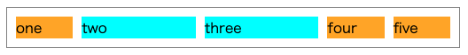
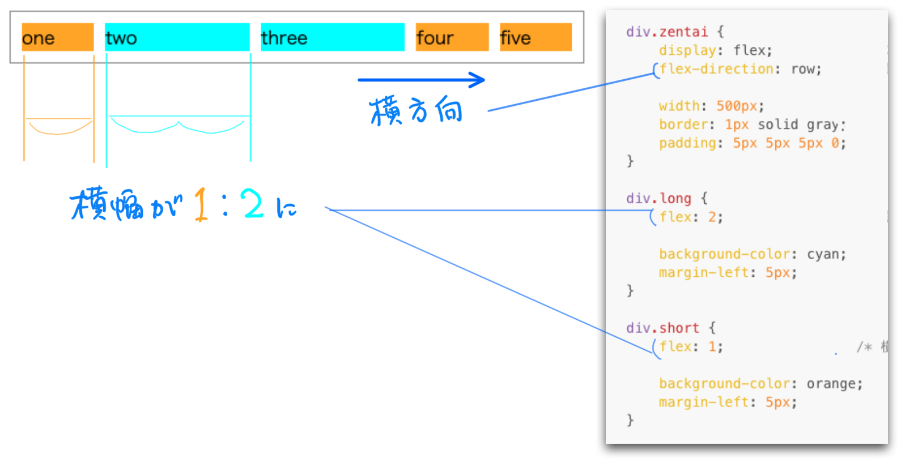
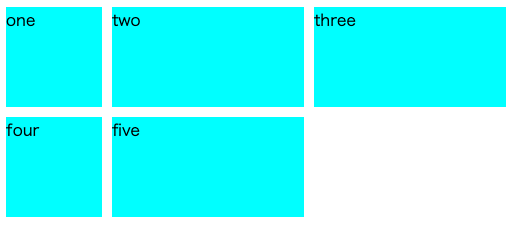
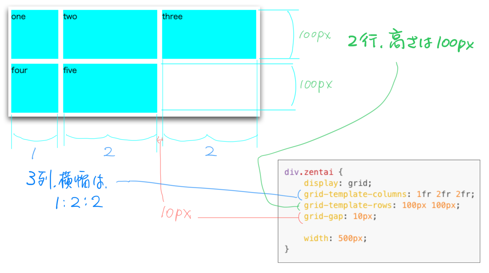
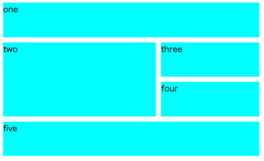
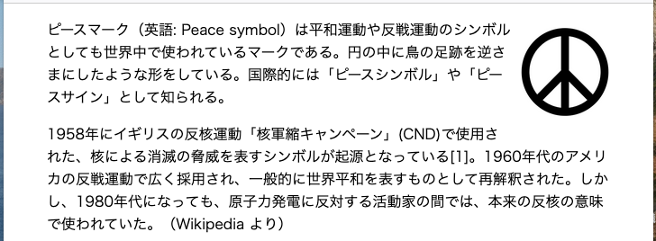

CSS を使うとページ全体のレイアウトを大きく変更することが可能です．ここでは display プロパティが重要な役割を担います．
display プロパティ
display プロパティによって要素の表示方法を大きく変更できます．display プロパティに設定可能な値（の一部）を次の表で示します．
| プロパティ値 | 説明 |
|---|---|
| block | ブロック要素のように表示 |
| inline | インライン要素のように表示 |
| none | 要素を表示しない |
| flex | フレックスボックス（後述） |
| grid | グリッドレイアウト（後述） |
block はブロック要素のように表示することを意味します．例えば，em 要素はインライン要素なので，em 要素の前後の文字と同じ行に表示されますが，em 要素に display:"block" 属性を設定すると，ブロック要素のように別行立てで表示します．
inline はインライン要素のように表示することを意味します．p 要素に対して display:"inline" 属性を設定すると，前後の文字と同じ行に表示されるようになります．
以上の2つの設定は，ブロック要素とインライン要素の種類と，見た目をそれぞれ独立に設定できることを意味します．HTML を記述するときには見た目のことを気にせずに，文書の構造に基づいて記述しましょう．また，見た目は CSS で全ての設定を行いましょう．
none は要素を表示しないことを意味します．「表示しない要素なら，HTML や CSS にそもそも書かなくて良いのではないか？」と疑問に思うかもしれませんが，次回以降学習する JavaScript と組み合わせて，「ボタンを押したときに要素を表示/非表示にする」といった動きのあるページを作るのに使うことがあります．
フレックスボックス
一行の複数の要素を並べるときに，それぞれの要素の幅を細かく調整するのは手間がかかるものです．フレックスボックスは要素を一方向に並べる設定を簡単にしてくれる機能です．（といっても，細かな設定もできます．）
ここでは，フレックスボックスの簡単な例を示して，解説します．
なお，以下の HTML では div 要素を使っていますが，この要素は特に意味を持たないブロック要素です．HTML のdiv の部分は気にせずに，class 属性の設定と CSS における各クラスの設定に注目しましょう．
（HTML ファイル）
<div class="zentai">
<div class="short">one</div>
<div class="long">two</div>
<div class="long">three</div>
<div class="short">four</div>
<div class="short">five</div>
</div>
（CSS ファイル）
div.zentai {
display: flex; /* フレックスボックスにする */
flex-direction: row; /* 横向きに表示（column に変更すると縦向きに表示） */
width: 500px;
border: 1px solid gray;
padding: 5px 5px 5px 0;
}
div.long {
flex: 2; /* 横幅2で表示 */
background-color: cyan;
margin-left: 5px;
}
div.short {
flex: 1; /* 横幅1で表示 */
background-color: orange;
margin-left: 5px;
}
この HTML と CSS により表示されるページは次のようなものです．

- 5つの子要素でちょうど横幅いっぱいになるように調整
- div.long 要素の横幅は，div.short 要素の2倍

グリッドレイアウト
グリッドは，要素の表示領域を行と列に区切ってその中に子要素を配置するレイアウトです．これも HTML と CSS の例を示して説明します．
(HTML ファイル)
<div class="zentai">
<div class="box">one</div>
<div class="box">two</div>
<div class="box">three</div>
<div class="box">four</div>
<div class="box">five</div>
</div>
5つの div 要素には box クラスを指定していますが，要素の背景色を水色に設定するためだけに使っており，グリッドレイアウトとは関係ありません．
（CSS ファイル）
div.zentai {
display: grid; /* グリッドレイアウトにする*/
grid-template-columns: 1fr 2fr 2fr; /* 3列にする．幅は 1:2:2 の比率*/
grid-auto-rows: 100px 100px; /* 高さは 100px */
grid-gap: 10px; /* 隣り合う行（列）の間隔を 10px に*/
width: 500px;
}
div.box {
background: cyan;
}
次のページが表示されます．

この CSS は次の設定を意味します．
- 2行3列のグリッドにする
- 左上から5個の子要素を配置

グリッドレイアウトでは，各要素の表示位置を指定することによって，次のように複数のセルにまたがるような表示も可能です．

また，このページの CSS の説明は割愛します．
フロート
要素のフロート（浮動）は，通常のレイアウトとは独立に，右端や左端に要素を移動する機能です．
(HTML ファイル)
<img class="sign" src="peace_sign.png">
<p>ピースマーク（英語: Peace symbol）は平和運動や...として知られる。</p>
<p>1958年に...で使われていた。（Wikipedia より）</p>
(CSS ファイル)
img.sign {
float: right; /* 画像を右に浮かせる */
width: 100px;
height: 100px;
margin: 10px 0 10px 10px;
}
次のページが表示されます．

float: rightに設定することによって，ページの右端に画像を浮かせています- right の代わりに
leftに設定すると画像はページの左端に浮かせられます
位置指定と段組み
ここまでフレックスボックス，グリッドレイアウト，フロートについて説明しましたが，それ以外にレイアウトを設定する方法を簡単に紹介します．
位置指定
要素の位置を細かく指定する方法が五種類あります．この方法を使うと，2つの要素を重ねて表示したり，ウィンドウ上に要素を固定させる（スクロールしても位置が変わらない）ことができます．
段組み
グリッドレイアウトに似た効果として，段組みがあります．例えば，2段組の場合は，左右二つに表示領域を縦に分けて要素を配置できます．
お勧めのレイアウト設定
- ページ全体のレイアウトには，フレックスボックスやグリッドレイアウト，段組みがお勧めです
- フロートはページの中のごく一部について指定することをお勧めします．フロートを多用すると混乱しやすいです．
- 位置指定はなるべく使わない方が良いです．具体的な数値で座標を指定することになるため，微調整に手間がかかります．CSS をたくさん記述することになるため，修正したくなるとさらに手間がかかります．
1つのページについて CSS の設定をするときには次の順番に考えると良いです．
- まず，ページの全体レイアウトを考える
- CSS を記述して，body の子要素の表示位置を確認
- このとき，要素の内容の表示は気にしない
- 前項が終わったら，配置した各要素の内容のレイアウトを順番に考える
参考資料
例えば，グリッドレイアウトでページの見た目を作ろうと考えたとします．この資料ではグリッドレイアウトの詳細は掲載していませんので，細かい設定をどうしたら良いか困ってしまうでしょう．
そこで，この資料に掲載したレイアウトのやり方それぞれについて MDN Docs の参考資料を以下に示します．各資料には情報が盛り沢山です．決してすべて読もうとしないで，自分がやりたいレイアウトについての資料だけ見るようにしてください．